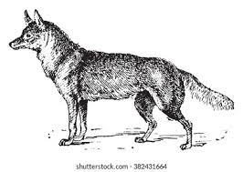

Éste era un perro viejo al cual ya no quería su dueño, ya no se le daba de comer a aquel perro que ya apestaba y era viejo.
El perro estaba triste porque ya no le daban de comer. Se encontró con el Coyote, que le dice:

¿Por qué estás triste?
No tengo que comer porque ya estoy viejo. Ahora ando por aquí vagando, mi amo ya no me quiere.
Le dijo el coyote:
Dame un pavo. Esta noche iré a buscarlo y tú saldrás a ladrarme y te lo abandonaré y entonces verás que sí te darán de comer.
Y llegó la noche y el coyote fue a sacar un pavo y el perro viejo salió a ladrarle.
¡Guau, guau, guau!
El perro le quitó el pavo al coyote y entonces salió su amo
¡Ay, mi perro viejo! ¡Ya le quitó el pavo al coyote! ¡Ay, mi perro viejo! ¡Ahora que le den de comer una tortilla gruesa! ¡Ay, mi perro viejo!
Ce chichi huehue ayocmo oquitlazotlaya niteco, ayocmo xictlamaca inin chichi, ye tetlayelti, ye huehue.
Otlatlacoya, ayocmo quitlamaca. Oquinamic coyotl, quilhuía:
—Tacoya?
—Amo nitlaqua jbor in ye nihuehue. Axan ninenemi canican, ayocmo nechtlazotla noteco.
Quitohua coyotl:
—Xinechmaca cente huexolotl. Niaz ompa teotlac niquixtitin ihuan tehua tiquizaz huan tihuahualoz huan timitzcahuilitehuaz; huan tiquitaz niman mitztlamacazque.
Ihuan oya teotlac, huan oquiquixtili huexolotl, huan chichi huehue oquiz tlahuahuatihui:
—Hua, hua, hua!
Oquiquixtili huexolotl in coyotl, ihuan yahui ni teco:
—Ay, nochichi huehue! Yoquiquixtili huexolotl in coyotl! Ay nochichi huehue! Axan
Critica:
Es una buena historia, en la cual nos hace reflexionar, sobre como tratamos los demas, y por que solo tomamos en cuenta a alguien cuando hace algo por nosotros cuando en realidad siempre han estado ahi
Glosario: